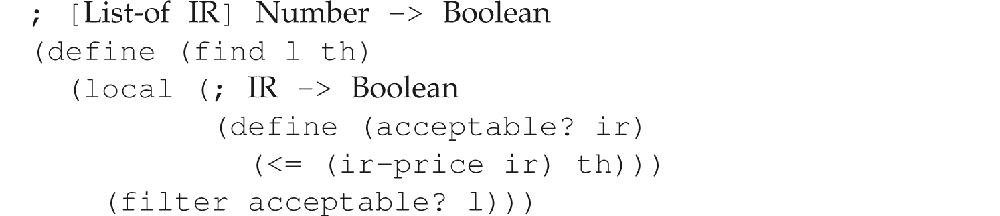

17 Nameless Functions
Using abstract functions needs functions as arguments. Occasionally these functions are existing primitive functions, library functions, or functions that you defined:
• (build-list n add1) creates (list 1… n);
• (foldr cons another-list a-list) concatenates the items in a-list and another-list into a single list; and
• (foldr above empty-image images) stacks the given images.
At other times, it requires the definition of a simple helper function, a definition that often consists of a single line. Consider this use of filter:

It finds all items on an inventory list whose price is below th. The auxiliary function is nearly trivial yet its definition takes up three lines.
In DrRacket, choose “Intermediate Student with lambda” from the “How to Design Programs” submenu in the “Language” menu. The history of lambda is intimately involved with the early history of programming and programming language design.
This situation calls for an improvement to the language. Programmers should be able to create such small and insignificant functions without much effort. The next level in our hierarchy of teaching languages, “Intermediate Student Language with lambda,” solves the problem with a new concept, nameless functions. This chapter introduces the concept: its syntax, its meaning, and its pragmatics. With lambda, the above definition is, conceptually speaking, a one-liner:
; [List-of IR] Number -> Boolean
(define (find l th)
(filter (lambda (ir) (<= (ir-price ir) th)) l))
The first two sections focus the mechanics of lambda; the remaining ones use lambda for instantiating abstractions, for testing and specifying, and for representing infinite data.